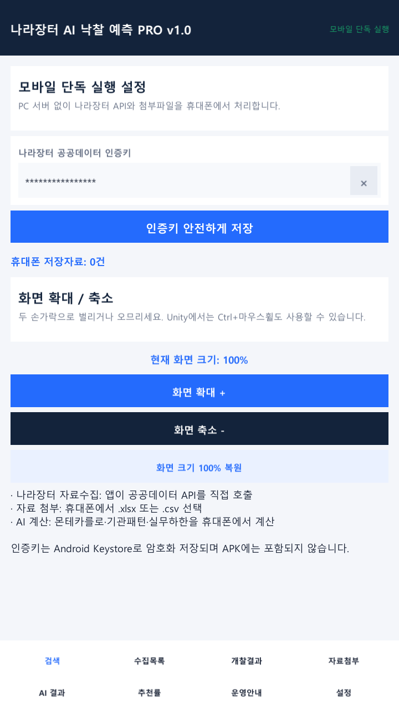
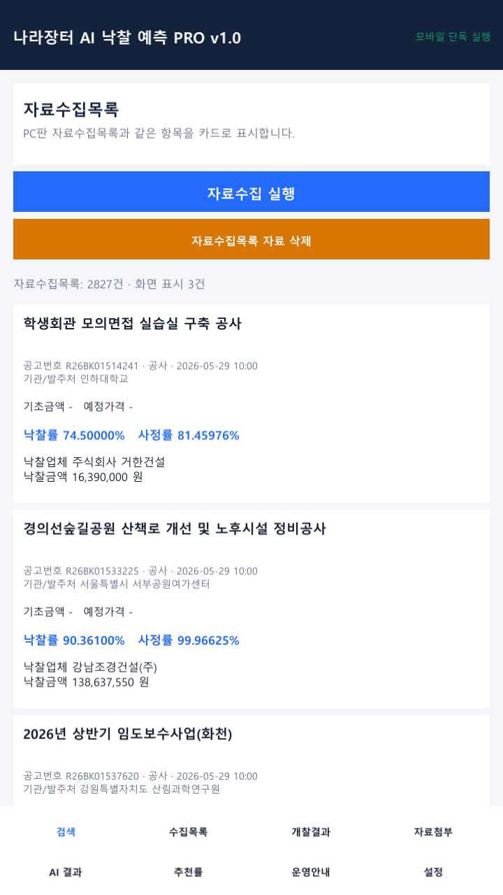
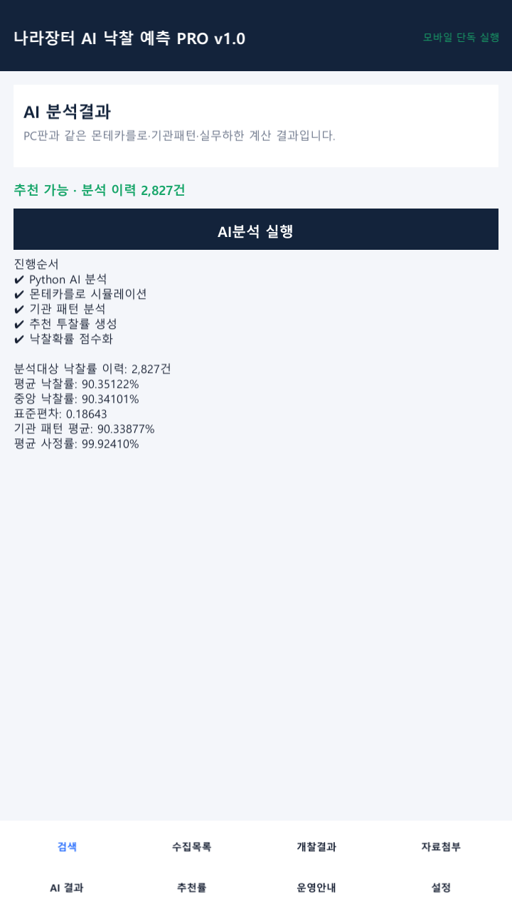

인증키 등록
나라장터 공공데이터 API 인증키를 안전하게 저장합니다.
나라장터 공공데이터를 가져오고, 첨부한 낙찰데이터를 분석해 입찰대장 엑셀까지 만드는 모바일 입찰 업무 앱입니다.



공공데이터 수집부터 낙찰자료 분석과 입찰대장 엑셀 생성까지 모바일에서 순서대로 진행합니다.
나라장터 공공데이터 API 인증키를 안전하게 저장합니다.
검색 조건에 맞는 나라장터 공고와 개찰자료를 가져옵니다.
엑셀·CSV 낙찰데이터를 첨부하고 AI 분석을 실행합니다.
분석 결과를 정리한 입찰대장을 Excel 파일로 만듭니다.